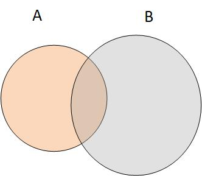

Conjuntos¶
Autores: Rogelio Mazaeda, Félix Miguel Trespaderne.
Contenidos¶
Introducción
Conjuntos
Modificando dinámicamente los conjuntos
El conjunto_como colección iterable
Métodos de la clase conjunto_y funciones útiles
Operaciones matemáticas de conjuntos con conjuntos
Ejemplo con comentario sobre eficiencia de conjuntos
Introducción.¶
El formalismo de la teoría de conjuntos es muy utilizado en matemáticas. Todos hemos recibido en nuestra educación previa muchos de sus conceptos básicos.
Evitando ser excesivamente formales, un conjunto en matemáticas permite referirnos como un todo a una multitud de elementos diversos.
Un conjunto puede estar vacío. O puede estar compuesto a su vez por otros conjuntos. Sobre los conjuntos se pueden plantear una serie de operaciones como la unión, la intersección y la diferencia entre otras.
La colección set de Python trata de implementar algunos de los conceptos de su referente matemático, como veremos en las secciones posteriores.
Conjuntos¶
Los conjuntos (sets) de Python son colecciones que tiene las siguientes características:
La colección es mutable, pero los elementos contenidos tienen que ser inmutables.
Los elementos no pueden aparecer repetidos.
Es iterable y no secuencial
Se pueden crear conjuntos especificando los elementos que lo conforman con la sintaxis:
{elem1, elem2, elem3, ...}
donde se utilizan las llaves {} al igual que con los diccionarios, aunque debe observar que los elementos se describen de forma diferente.
digitos = {'0', '1', '2', '3', '4', '5', '6', '7', '8', '9'}
Otra forma de crear conjuntos es utilizando la función set(), a la que se le pasa como argumento algún otro iterable.
Ejemplo:
lista_num = [1, 2, 3, 4, 3]
set_num = set(lista_num)
set_letras = set("Las letras de esta cadena formaran el conjunto, pero sin repeticiones.")
print(set_num)
print(set_letras)
{1, 2, 3, 4}
{'c', 'j', ' ', 'n', 'u', 'p', 'd', 'a', 'o', 'i', ',', 'm', 's', 'r', 'e', 'f', 't', '.', 'L', 'l'}
Es importante entender que los elementos del conjunto no pueden aparecer repetidos. Aunque tanto la lista como la cadena que sirve como fuente para crear el conjunto tienen elementos repetidos, el conjunto sólo almacena una instancia de cada elemento.
Observe además que la función print() está sobrecargada para poder sacar por pantalla objetos de tipo conjunto.
En la medida en que el conjunto es una colección mutable, se tienen que tener en cuenta las implicaciones ya vistas en el caso de las listas y los diccionarios en lo relativo a la creación de alias y la copia superficial.
Esto es:
a = {1,2,3,4}
b = a
En lo anterior, b es simplemente un alias de a. Cualquier modificación de una variable o de la otra que ocurra después de la asignación, modifica el dato común que es accedido a través de cualquiera de ellas.
Si se quiere obtener otro conjunto que inicialmente contenga los mismos elementos que otro, se utilizará el método .copy() del conjunto fuente, como se indica en el ejemplo.
a = {1, 2, 3, 4}
b = a.copy()
b.add(10)
print(a, b)
{1, 2, 3, 4} {1, 2, 3, 4, 10}
Modificando dinámicamente los conjuntos¶
Al ser una colección mutable, se pueden añadir y borrar elementos del conjunto.
s = set()
s.add(1)
s.add('cad')
print(s)
{1, 'cad'}
En el fragmento de código se crea inicialmente un conjunto vacío. Observe que no se puede utilizar s = {}, porque resultaría ambiguo al confundirse con la sentencia que crea un diccionario vacío.
Posteriormente, se utiliza el método .add() para añadir un elemento entero y a continuación otro de tipo str.
Para borrar elementos de un conjunto se tiene:
Método
.clear(): borra todos los elementos.Método
.discard(elem): borra elementoelemsi existe. Si no existe, no ocurre nada.Método
.remove(elem): elimina elementoelemsi existe. Si no existe: se lanza excepciónKeyError.Método
.pop(): saca y devuelve elemento arbitrario. Si el conjunto está vacío: lanza excepciónKeyError.
s = {1, 2, 3, 4, 5}
s.discard(9)
s.discard(4)
a = s.pop()
print('Elemento sacado con pop:', a, '\nConjunto que queda', s)
Elemento sacado con pop: 1
Conjunto que queda {2, 3, 5}
El conjunto como colección iterable¶
Un conjunto es una colección iterable. De manera que se puede utilizar en aquellas construcciones que espera este tipo de elementos, como por ejemplo bucles for.
vocales = set('aeiou')
cons_preferidas = set('pm')
for consonante in cons_preferidas:
for vocal in vocales:
print(consonante + vocal)
me
ma
mo
mu
mi
pe
pa
po
pu
pi
Métodos de la clase conjunto y funciones útiles¶
Existen funciones nativas de Python que están sobrecargadas para trabajar con conjuntos de la misma forma que con cualquier otro iterable.
Por ejemplo:
sum(): Suma todos los elementos (en caso de que la suma este definida para esos elementos)len(): Devuelve un entero con el número de elementos.min(), max(): Devuelven el mínimo y el máximo respectivamente de los elementos en el conjunto.sorted(): Devuelve una lista con los elementos del conjunto ordenados.list(), tuple(), enumerate(): Devuelve una lista, una tupla o un enumerado respectivamente con los datos del conjunto que se le pasa como parámetro.
s = set(range(6))
print(list(enumerate(s)))
[(0, 0), (1, 1), (2, 2), (3, 3), (4, 4), (5, 5)]
Operaciones matemáticas de conjuntos con conjuntos¶
La característica distintiva y la utilidad mayor de los conjuntos se obtiene precisamente de su capacidad para representar el comportamiento de los conjuntos matemáticos.
Las operaciones más importantes en este sentido son:
Determinación de si un elemento o, en general, un subconjunto pertenece o no al conjunto.
Obtención del conjunto que resulta de la unión de dos conjuntos.
Obtención del conjunto que es la diferencia entre un conjunto y otro.
Obtención del conjunto que resulta de la intersección de dos conjuntos.
En lo que sigue, vemos con algo más detalle cada una de estas operaciones.
Pertenencia de un elemento o subconjunto a otro¶
Las operaciones de esta subsección dan como resultado un valor lógico. Para el caso de la pertenencia o no de un elemento a un conjunto, se tendría que el resultado sería True si:
Operación |
Representación matematica |
Python |
|---|---|---|
a es un elemento de A |
\(a \in A\) |
|
b no es un elemento de A |
\(b \notin A\) |
|
A es igual a B |
\(A = B\) |
|
B es subconjunto de A |
\(B \subseteq A\) |
|
A es un superconjunto de B |
\(A \supseteq B\) |
|
A y B son disjuntos |
\(A \cap B = \emptyset\) |
|
a = {1, 2, 3}
b = {3, 2}
print(a.issubset(b))
print(a.issuperset(b))
print(b.isdisjoint(a))
False
True
False
Unión, intersección y diferencia de conjuntos¶

Estas operaciones sobre conjuntos dan como resultado otro conjunto.
El conjunto unión contiene todos los elementos de sus conjuntos operandos.
El conjunto intersección contiene que pertenecen simultáneamente a ambos conjuntos.
Tanto la unión como la intersección son operaciones simétricas. Ej: a.union(b) == b.union(a).
La diferencia, sin embargo, no es simétrica: el conjunto diferencia contiene todos los elementos del primer operando que no están en el segundo.
Una operación relacionada con la anterior es la que actualiza los elementos de A, eliminado aquellos que están en B.
Operación |
Representación matematica |
Python |
|---|---|---|
A unión B |
\(C = A \cup B\) |
|
A intersección B |
\(C = A \cap B\) |
|
A diferencia de B |
\(C = A - B\) |
|
A actualiza con B |
\(A = A - B\) |
|
Ejemplo con comentario sobre eficiencia de conjuntos¶
Los conjuntos de Python pueden ser muy útiles a la hora de ofrecer soluciones inesperadamente simples a problemas que de otra forma requerirían un mayor esfuerzo. Los conjuntos constituyen un recurso de alto nivel de abstracción que el lenguaje pone a disposición del programador.
Una mayor abstracción, al evitar tener que prestar atención a los detalles, permite una mayor productividad en la tarea de programación.
Pero no todo son ventajas. Una mayor abstracción muchas veces implica un mayor coste computacional al implicar la interposición de capas de software entre la descripción abstracta del problema general y la solución particular de cada caso.
La buena noticia es que los conjuntos de Python tienen un coste computacional relativamente bajo. Al igual que los diccionarios, los conjuntos son implementados como memorias asociativas o tablas hash muy eficientes.
Lo anterior implica que podemos utilizar los conjuntos como elementos auxiliares sin preocuparnos excesivamente.
# Función que recibe lista y devuelve otra sin elementos repetidos
def elimina_rep(lista_repetidos):
return list(set(lista_repetidos))
# Programa principal
lista = [1, 2, 1, 4, 3, -2, 1, 3, 2, 2, 9]
print(elimina_rep(lista))
[1, 2, 3, 4, 9, -2]
La función en el ejemplo anterior recibe una lista, que puede tener o no elementos repetidos, y devuelve otra que contiene los elementos de la lista original pero representados solamente una vez.